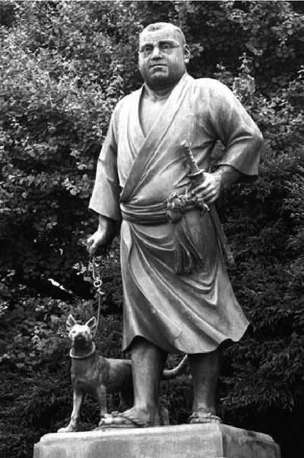
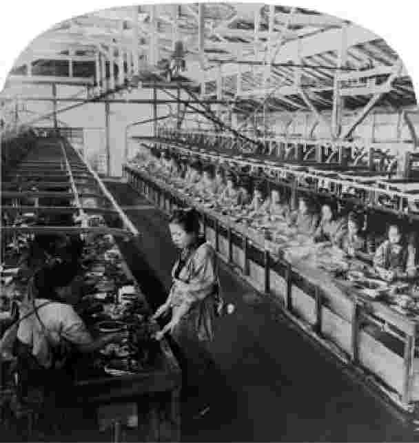

1868年，明治天皇以胜利的姿态从古都京都迁至江户，不出一年，他就将东边的临时行宫定为新皇居。此时，江户正式成为日本的新首都，并被更名为东京——意为东方之都。无论是对于起义者还是佐幕派，这一场王政复古都血腥且富有戏剧性，首都之内对变革有很高的期冀。然而，对于日本人口中的绝大多数而言，明治维新（人们是否实际注意到它的发生还是一个问题）和一场武士叛乱或政变没有差别。事实上，日本人民缺少乐观的理由——很难认为他们的生活状况会有显著的改善，他们却完全有权怀疑过去几十年间的戏剧性事件只会带来另一场权力的重组和武士阶级的特权。
不过，在17世纪和19世纪的政治革命之间，存在许多极为重要的区别，明治维新开始后的十年，日本确实发生了变化。即便1868年的一系列血腥事件应当被看作一场精英运动，但在1868年至1880年代早期，明治维新成了一场实实在在的革命，日本社会及生活状况在各个层面都发生了深刻的变化。
明治天皇在江户即位后不久，就为这些变化定下了基调，颁布了所谓的《五条誓文》，新政府（以天皇的名义）在誓文中作了五项基本承诺 [1] ：
这些承诺代表着幕藩体制的彻底解体，并且明显接纳了许多现代的政治原则。除了日本国内的帝国主义倾向和建设强大国家的动力，接纳现代政治体制本身也是改革的明确目标之一。革命的政府抱有一项重大的认识，即认为只有通过建立能与西方列强平起平坐的政治体制，日本才能摆脱不平等条约之耻。
新政府一次又一次地谋求解除条约，但外国列强一次又一次地使之无果而终，列强坚称，除非日本的法制和政治体制能够为他们的权利提供充分“现代的”保护，否则他们不会放弃已有的特权。在此，“现代的”与“文明的”被当作同一个词来使用。最终，历经暴动、示威和日本的大规模改革，条约至1890年代始获重新谈判。那时日本有了本国通货、国家税制、两院制立法机关，以及一部成文宪法。尽管程度有限，但宪法保护着日本人的权利和义务，并开启了法治。此外，在“帝国的年代”，日本作为初生的帝国主义国家，其心已是昭然：新政权1869年殖民同化北方岛屿北海道，1879年殖民同化南方王国冲绳；早在1873年，日本就计划侵略朝鲜；至1895年，日本已经在其第一场重要的现代战争中凭借新式现代化军事力量击败了庞大的邻国——中国，侵占了台湾。换言之，至1890年代，在“富国强兵”的口号下，日本开始表现为第一个现代化的亚洲国家。
总而言之，紧随维新而来的改革受到日本国内和国际两方面的推动。加于新政权的强大外部压力是一个决定性的因素，令明治时期的国家形成规划有别于早先德川时期的民族形成规划；西方全球化的所谓“第二阶段”携带着资本主义扩张的全部力量，势力与威胁不可阻挡。一方面是现代日本同自身历史和传统的不稳定关系，另一方面是它同现代性和西方的不稳定关系，这两方面是这段时期的关键特征。在许多方面，日本在这一时期企图完成不可能的任务，想要在面临西方工业扩张的条件下建立自己的现代性。
在明治时期的大部分时候，尤其是在1889年颁布《大日本帝国宪法》之前，一批政界元老指导着政治事务，他们来自萨摩、长州、土佐、肥前这四个有实力的藩。这一批人在维新中坚定地支持皇室，因而享有接触皇室的特权，后被称为萨长集团，有时也被称为元老（genrò）。权力有效地集中在相对较小的外样大名集团手中，这显示了日本国内势力均衡的根本变化，并在一些地方遭到了严重抵触。其中之一是会津藩，在维新已获正式宣告后的几个月内，德川幕府的效忠者仍然在会津同新的帝国军队作战。
会津事件早早显示，尽管维新具有帝国主义本质，明治政权仍会面临一些合法性的残余问题。因此，明治天皇在东京设立了一座新的、国家性的神社，也就是东京招魂社（Tokyo shôkon-sha），这座神社将为所有在日本帝国的名下战死的士兵提供官方纳神（kami）所。日光的神社由德川建立，旨在解除伊势的皇室神宫具有的特权，并为全国性崇祀提供新的中心，是为国家建设的象征符号化——东京招魂社的设立也如出一辙。通过建立一个全国性的宗教符号来令新政权合法化，这是日本历史的一个特征。
1879年，明治的新神社被更名为靖国神社（Yasukuni jinja，这一名称被沿用至今），它将成为新兴的国家神道教的中心建筑；新政权鼓励国家神道教，将其作为令天皇制下的维新合法化的手段。会津及其他支持德川的军队在靖国神社内未获神龛，意味着他们是天皇和国家的敌人（至今对这种指控仍存争议），这对新日本的象征符号化颇为重要。直至太平洋战争结束后（实际是在1965年），靖国神社内才设立了一座新的镇灵社（chinreisha），为那些自1853年起在日本内战中死去的人招魂。这是经过深思熟虑后进行的努力，旨在协助为战后社会创造一个更具包容性的国家意识。镇灵社崇祀的神中，最著名的要数江藤新平和西乡隆盛，他们是来自肥前和萨摩的近乎传奇的武士；他们认为明治政府背叛了真正的日本精神，便各自领导了反明治政府的佐贺之乱（1874年）和西南战争（1877年），虽然他们曾为建立明治政府出力甚多。他们实践武士的传统——自杀以免被捕。
换言之，对明治政权理念和政策的异议不仅在原谱代大名中间徘徊，而且在新得势的萨摩、长州（1876年发生过叛乱）诸藩以及其他地方滋生。在当代，镇灵社同神社内的其余地块相隔离，并被保卫起来，因为极端民族主义团体威胁要炸毁镇灵社，认为它是对国家的冒犯。

图4 西乡隆盛遛狗的雕像，位于东京上野公园
靖国神社是现代日本最具争议性的机构之一。在20世纪下半叶，政客参拜靖国神社的行为在东亚引发抗议，因为靖国神社现在还供奉着太平洋战争中在天皇名下战死的士兵。一些批评者认为，参拜意味着当代日本未能就1930年代至1940年代早期帝国军队在亚洲的侵略作出恰当的忏悔；另一些人认为，参拜事实上对为帝国战死者而言是一种不敬，因为镇灵社是在表彰日本国内的“国家之敌”，甚至还表彰在抗击日本帝国的战斗中死去的外国士兵（尽管其神龛不为人所见、鲜为人知）；还有一些评论者放言，说参拜只是一种尊重现代日本历史的表现。争论至今未见缓和的迹象。
1868年天皇名下的《五条誓文》对新政权提出了许多要求。“求知识于世界”，以使日本实现现代化、成为强国，也许是其中最易实践的一条指令。这样一条命令对新政权有两点重大的暗示：第一是戏剧性地废弃了作为德川政权典型特征的锁国国策；第二是影响深远地削弱了在此前的三个世纪中占据教育特权的新儒学意识形态。
实际上，日本在锁国时期并未完全与世隔绝，幕府自身也曾向美国（1860年）和欧洲（1862年，1863年）派遣过使节，但1871至1873年外访的岩仓使节团，也许才是对开国政令最著名、最重要的回应。岩仓使节团由华族 [2] 岩仓具视领衔，长州出身的政治家木户孝允及同为长州出身、后成为日本首任首相的伊藤博文等一批元老均支持岩仓。在两年时间里，使节团先后访问了美国和欧洲，在欧洲访问了英国、法国、荷兰、俄国、德国和其他一些国家。
使节团负有双重使命，第一是尝试就不平等条约同美国及欧洲列强展开重新谈判；第二是网罗科学、技术、医药方面的知识以帮助日本“追赶”现代列强，同时还学习现代经济、政治及法律体系。实际上，上述两个目标最终纠结在一起，因为至日本成功实现现代化之前，西方国家一概拒绝重新谈判条约。
使节团回到日本，当时的日本渴求欧洲的知识，初具雏形的市民社会为有关社会、文化及政治事务的话语提供了公共空间。在1870年代早期，日本迎来了第一批现代报纸的出版，以1871年《横滨每日新闻》问世为肇始，《东京日日新闻》（今天的《每日新闻》的前身）紧随而至。进步的《朝日新闻》也在这一时期（1879年创办于大阪）面世。同时，出版业在日本城市中售卖西方书籍、随笔集和译本，开始繁荣。这为西方哲学和文学提供了进入日本文化的通道，知识分子迅速捕捉到了这些被引进的文化的重要性和潜力。
在这一时期，出现了一个被称为明六社（成立于明治六年）的进步知识分子重要团体。团体的创始人包括一些有影响的公共知识分子和政治家，如森有礼、福泽谕吉、加藤弘之和西周。这一团体后被认为是所谓日本启蒙运动的先驱，因为团体接纳了为西方现代性奠基的欧洲启蒙运动的观念，发行了一份有影响的杂志——《明六杂志》。这份刊物讨论了当时最为紧迫的社会、政治问题，例如民选议会的优点、政教分离的重要性和妇女在社会中的地位。此外，刊物还论及其他“现代”话题，例如经济政策和欧洲化学界、物理界的革新。
明六社中有各界富有影响力的思想家，但其中最重要的或许还是“启蒙者”福泽谕吉，他曾作为幕府考察团成员在1860年访问美国，在1862年又访问了欧洲。福泽从欧洲回到日本后，因他的畅销书《西洋事情》（1867—1870）而成名；该书共有十卷，福泽在书中展示了西方现代性的成果。不久之后，福泽忧虑日本在现代世界的生存，便写了系列著作《劝学篇》（1872—1876），在书中呼吁日本抛弃传统的（儒家的）求知方法和社会组织结构。他批判了世袭和迷信的信条，强烈要求在社会中实现机会均等，认为应当根据人（无论其出身背景如何）的贡献，尤其应根据人的学业成就确立人在社会中的地位。福泽的确是一位教育先驱，他在1858年创立了庆应义塾，用“西方”知识训练青年；这所学校是庆应义塾大学——日本第一所私立大学，至今仍享有极高声誉——的前身。
福泽谕吉及其他“启蒙者”都是明治时期进步运动的组成部分，这一运动以“文明开化”（bunmei kaika）为口号，而这一口号本身则从一开始就将欧洲模式的理性启蒙观念（西方帝国主义国家宣称负有形形色色的“文明教化使命”，理性启蒙观念位于这些国家的核心）等同于实现文明开化。口号之下的基本理念是日本必须“追赶”西方，以在现代国际关系体系中生存。在许多知识分子和政策制定者看来，“弱肉强食”（jakuniku kyôshoku）的思路支配着国际体系的逻辑。福泽及其他人从赫伯特·斯宾塞的著作里得到了这一社会达尔文主义理念，该理念在日本产生了巨大的影响，驱使日本实现更高程度的工业化，并最终将日本引向了帝国主义。
福泽关于个人尊严的思想从根本上否定了儒家传统，为自由主义意识形态在日本的发展奠定了基础，同样，他对于国际关系的理解也有助于打破传统的、中国中心的地区秩序视角（在此视角中，孤立的日本被置于边缘），并且提供了条件，令日本可能超越中国乃至可能超越西方国家的实力和地位。如果斯宾塞对历史进程的看法是正确的，那么欧洲就只是当时 最先进的文明，这就意味着日本将来可以更先进、更文明 。在福泽及其后数十年间的一些人看来，超越西方的关键在于日本吸收“西方科技”但保留自身“东方精神”（和魂洋才）的能力。在下一章中，我们将会看到，1930年代和1940年代对“超克现代性”、实际上也是对“超克西方”的吁求，源头便是上述逻辑。
由于教育质量的提升、识字率的提高、印刷发行量的增长，这些新的、现代的观念给日本人带来了实实在在的冲击，在发展中的城市中心尤其如此。在1870年代和1880年代，政治组织在城市和乡村社区形成并迅速增多。这些群体的成员一开始主要是武士，后逐渐有了多样化的人员构成。至1881年，日本有了第一个全国性政党——自由党。紧接着，改进党在1882年成立，由后来的日本首相大隈重信领导。同年大隈还创办了东京专门学校，该校1902年改称早稻田大学，直至今日仍是庆应的最强对手。
这些政党都在1884年解体，但它们在组织请愿和集会、发布宣言、发行刊物乃至在向成员征款方面都非常积极。换言之，这些政党开启了现代日本的大众政治实践。1880年代的关键事件是自由民权运动，这项运动逐渐获得了日本人口中不同人群的广泛支持。然而意味深长的是，这一民权运动中从未真正有妇女的位置。仅有若干思想独立的个体勇敢行动、堪为典范，例如卓越的津田梅子，她曾随岩仓使节团出访美国，后于1882年回到日本，此后创立女子英学塾，这所具有重要意义的学校后来成为津田塾大学。
在一些历史学家看来，1889年颁布的明治宪法似乎是上述大众参政革命怒潮的自然结果。事实上，新宪法确实在许多方面响应了政党的吁求，包括设立两院制立法机关——众议院由选举产生、上院（贵族院）限从贵族中遴选，保障一系列权利和义务。然而，宪法在形式上由天皇赐颁，主权仍归天皇，天皇高于宪法条款，议会基本是顾问咨询机构。
因此，宪法事实上更应该被视为元老的战略性举措，旨在防止失去对大众参政的掌控。行贵族政治的元老实际上极其不信任政党，并且似乎十分蔑视日本的普通民众，认为民众没有文化、没有能力抛却私利谋事为公。在元老看来，政党体制似乎会为自私自利大开方便之门，还会导致政策支离破碎，因而日本难以消受——为了“追赶”西方，为了变得足够强大、在不稳定的国际体系中生存，日本需要联合一致。
换言之，明治宪法的颁布应当被看作元老的一种手段，旨在掌控破土而出的人民现代政治意识。实际上，宪法承认并限制了 大众权利，它强调臣民的义务而非权利，并且在妇女权益方面毫无进步。事实上，妇女的解放仍然被认为是日本政治现代化进程中的主要道德风险之一——西方的妇女权益运动曾被看作欧洲已然道德失守的症候。宪法承认并限制了 大众政治，它为议会提供经选举产生的众议院（选举权仅为男性人口中约5%的国民所有），实权却仍然不归议会，而是留在元老手中；军方也逐渐掌权，他们都能直接接触天皇，而天皇仍是主权的中心。元老的策略所取得的最大成功之一，就是先发制人，避免出现任何有关令日本成为共和国的议论，由此维护了根本的体系，这种体系后被称为天皇制（tennô-sei）。
对于日本人民而言，所有这些革新的观念和现代法律改革只有在对日常生活起实际影响时才具有意义。尤其是，它们取决于国内社会改革和所谓士农工商等级体系的废止，后者将人口分为四个阶级（武士、农民、工匠、商人），提供的社会流动性极小。于是具有讽刺意味的是，革命者本来多为武士，而他们的首要任务便是废止本阶级的特权。这证明新政权有意愿、有能力实现对现代化的承诺。当然，并不是所有日本武士都具备对现代性要求的远见，其中有相当一部分人试图维护他们的传统特权。因此，革命的明治政权不得不坚定但审慎地行动，以免激起对革命的反动。
趁着维新的势头，元老集团很快有了动作。在活跃人物木户孝允和西乡隆盛的领导下，不出三年，大名的地位便被彻底改变；不出七年，整个武士阶级被废去身份。木户、西乡及其他如山县有朋等革命的领导人作出表率，在1869年将他们的自有土地上缴给天皇，而后从天皇那里获得任命，作为领薪的管理者治理原来的土地。结果他们保留了权力和地位，但他们对皇室的顺从具有巨大的象征意义，意味着统一国家 实质上就是皇土 。
元老在1869年上缴了自己的土地，1871年与天皇一起设立了国家委员会；他们单边废止了全部280个传统的藩，将其改置为72个县（是为今日日本地区单位之基础）。一些新的管理者原本甚至不具大名身份，而是有才能的武士乃至平民（heimin）。然而，大名获得了优厚的补偿，大多对新的安排感到满意，因为他们的安逸得到延续，而作为负担的责任则被卸除。
这一举措产生了一项重要的副效应——日本历史上第一次，一支国立的帝国军队可以统一在同一面旗帜下 [3] ，并且从萨摩和长州这样的强势边陲藩那里吸收兵员。
山县有朋是日本现代军队的伟大先驱，后来成为1889年明治宪法体制下的日本第一任首相（日本历史上第三位首相），1898年兼任了帝国军队的陆军元帅。在他的影响下，明治天皇邀请欧洲和美国的军事专家来训练新军使用现代枪弹。
正是山县促成了国家军队的建立，这支军队起初是由一万名武士组成的军事力量，后在1873年成为征兵制军队；那年，广泛征召所有20岁以上男性服役三年的制度开始执行。同1870年的其他各项改革一起，征兵制军队的建立，被日本的各种武士小集团视为最后的致命一击；征兵制似乎挑战了武士阶级最后的特权和义务——佩刀权和保卫领土之责。一些元老曾心甘情愿地向天皇上缴领地和头衔，但连他们也认为征兵制走得太远。事实上，同是在1873年，元老成员西乡隆盛主张由武士执行对朝鲜的侵略，山县有朋和木户孝允为了回日本阻止西乡的计划，不得不提前结束岩仓使节团的访问。西乡认为侵略可使日本的军队变强，并可恢复武士的生命力；他甚至自愿前往朝鲜，想被朝鲜人杀害，从而为战争制造借口。西乡的计划失败后，肥前武士江藤新平辞去新政权参议员一职，回到他的家乡佐贺，并在那里组织幻想破灭的武士，发动了一场厄运已定的叛乱。
因此，或许可以认为，山县的征兵令既是 使日本军队现代化的尝试，也是 约束和控制难驾驭的武士的必要步骤。实际上，山县的现代征兵制军队迎来的第一场重要军事胜利，便是在1877年的西南战争中全面击败西乡隆盛的武士军力。之后不久，在山县的领导下，日本的帝国主义军队也击败了中国（1895年）和俄国（1905年）。
日本的国家化带来立竿见影的经济优势，其中之一便是创建真正的国家税制，这在日本史无前例。这意味着中央政府能够为一系列公共建设项目筹集资金。大久保利通等人主张现代化，在他们的指挥下，资金不仅代表建设国家军队的能力，且赋予政府建设全国性铁路的手段，还可建“样板工厂”，供企业家和企业界效仿和发展。第一段铁路从东京延伸至横滨附近，1872年竣工；此后不出20年，共铺设了近2500公里铁轨。火车是（并且今天仍然是）工业现代性的标志，1854年佩里的缩微火车头令日本人感到惊奇，此后火车就成了日本人印象中强有力的象征。在此，日本政府的角色为我们带来一些有趣的问题，即在“后发优势”经济，或称以“追赶”为目标的经济中，国家应当扮演何种角色。
换言之，国家税制为现代经济体系的建立提供了燃料。它也引起了普遍的社会变革：铁路令日本偏远地区与首都之间交通更为便利——德川政权甚至不可能想象到这样的场景；此外，工厂的发展带来更高程度的城市化，完全改变了数百万日本人的生活。
然而，废藩也招致许多问题，比如过去武士从大名那里抽得收入，而今政府得给所有武士发放俸禄，形成了巨大的财政负担。1871年，这项负担总计约占国家税收的50%，而武士只在人口中占极小比例，这自然很快招来公众的极大不满。
最终，一种快速增量方法被用以逐渐废止武士身份。早在1869年，这一进程就已开始，武士等级被减至上级和下级两种。三年之后，所有非武士阶级的日本人口都被重新归类为平民（从而终结了对服装、居所和职业的限制，这些限制曾是德川体制的特征），下级武士被并入平民。当然，平民阶级实际上依旧内部分化，持续多年。其间各种少数群体凸显：外国人被区别对待，西方人获得极大特权，而那些来自亚洲、往往是作为战争移民抵达日本的人，则遭受了相当严重的歧视；此前被称为秽多（eta）或非人（hinin）（不洁净的人或非人类）的社会少数群体，被重新归类为部落民（burakumin）——这只是在替问题更名，并未解决问题； [4] 最大的处境不利的群体则是妇女，她们被挡在现代政权带来的所有新自由之外——反而被指望成为“贤妻良母”，或成为新兴纺织工厂不知疲倦的劳动力。当然，在迅速成长的城区和较为传统的乡村社区之间，也依然存在财富、价值和生活方式上的巨大差异。
事实上，1872年，在初等义务教育得到推行时，日本的一些地方发生了骚乱，抗议强制要求将孩子送进学校而无法让孩子外出做工。尽管如此，至世纪之交，已有将近98%的儿童接受初等教育，高等教育也开始繁荣，这意味着政府将能改革其招聘方式，根据人们在考试中的表现（而非依世袭）来聘用雇员。
1873年，政府决定对所有武士的俸禄征税。此后，在1874年，政府为平息武士对征税的怨言，提出了一项方案，即以政府债券充作武士的俸禄，那些接受这一方案的武士获得了极大的收益。

图5 在三井自动缫丝工厂工作的妇女，约1905年
而到了1876年，曾拒绝上述方案的武士发现他们不得不将俸禄转为债券（且转换率远不如之前），当年，明治政府还废除了武士在公共场合佩刀的权利，限这项权利为警察和军人（其中有许多人为平民）所有。至此，武士所有的特权都已被系统地、逐步地解除了：他们不再有特权地位，不再享有年俸，不再有佩刀的权利，甚至不再有穿特殊服装、留特殊发型的资格。至1877年西乡发动“武士的叛乱”之时，武士已不复存在。
然而，值得思考的是，武士这一社会阶级虽在日本遭到了废除，对于“武士精英”的虚浮理想却并未被抛弃。事实上，日本很快便将可敬的、忠诚的武士形象重塑为国家名片，这正是日本在接触现代性时的悖论之一。武士阶级本来代表来自封建过往的、压迫性的、非生产性的、高耗费的特权精英，却被重新想象为日本国家 价值的典范。甚至连西乡隆盛的叛乱也很快被浪漫化，被当作以天皇之名进行的一场光荣的自我牺牲——叛乱被表述为一小股武士在抵抗不可阻挡的现代性之潮，目的是为了向日本人民显示日本人应有的气概，以免机器、工业和重商主义导致人们忘本。正如西乡曾自愿在朝鲜牺牲自己以“拯救”日本，上述传奇称西乡在日本牺牲了自己，以从日本自身的手中拯救日本。尽管面临西化和现代化的冲击，这则通俗故事的道德力量是肯定日本传统中的根本价值——无论日本要作何种改变，日本仍必须是日本。
在支持武士道为“日本之魂”的人当中，新渡户稻造或许是最有影响力的一个。讽刺的是，新渡户认为武士道是现代性问题的答案；他认为欧洲列强都具有复杂且根深蒂固的宗教信仰及意识形态体系，这令诸国保有一贯的认同和道德价值：他担心日本缺乏这样一种国家认同。新渡户并非伟大的历史学家，但在回顾日本历史时，他将武士道看作一条贯穿的线索（尽管“武士道”这一术语实际上始于现代），并在将武士道介绍给世界时，称其为日本版的欧洲“骑士精神”。新渡户的名作《武士道》（1899年）事实上是以英文写就、面向西方读者，后来才有了日文译本。尽管如此，至20世纪早期，武士道并非武士阶级的一套理想而是日本的意识形态这一观念，已深深嵌入对征兵制军队的训练之中，并且更广泛地植根于社会。
从许多方面看，在日本即将迎来20世纪之时，“国家认同”问题是最为紧迫的主题之一，并且人们可以在新形成的、活跃的公共空间中参与讨论这一主题。致力于探讨“现代世界中何谓‘日本人’”的杂志开始出现。冈仓天心 [5] 等知识分子牵头，欧内斯特·费诺罗萨 [6] 等外国在日访学人士助推，他们都渴望挖掘日本人的“奇异”之处，以供欧洲和美国消费——一种名副其实的全国性自我拷问行为诞生了。后学认为这是所谓“日本人论”（Nihonjinron）文学（即探讨日本人独特性的文章）的肇始，此类文学今日仍有炮制。这种认同危机常被看作现代性成长之痛的普遍症候。
这一问题有许多维度。一方面，日本一些最伟大的现代小说家，比如夏目漱石，在他们的作品中把同现代性的遭遇作为中心主题。漱石曾在世纪之交游学英国，当时英国受到污染的工业城市昏暗无光、已变得令人沮丧，漱石便带着这种印象回到了日本。他的许多最著名的小说哀叹传统日本价值的丧失，因为它们被此类工业现代性吞没了。其他作家，例如冈仓天心本人，则试图通过对比易逝的现代性重商主义来认识并明确定义日本的美学；如果不能认识“日本的”价值，又如何能保存它们？
另一方面，外行人则试图发现新日本的界限，暗中以他们的行动探察其边界。内村鉴三事件就是一个非常著名的例子。内村是东京第一高等学校的英语教师，1891年1月，内村拒绝向天皇本人签名的《教育敕语》鞠躬。他声称明治宪法允他以宗教信仰的自由，作为一名基督徒，被强制敬拜偶像将是对他的信仰的侵犯。不幸的是，官方和校方均未表示同情，在针对这一所谓叛逆行为的抗议声浪中，内村最终被迫辞职。内村事件显示对基督教的猜忌仍未绝迹，正是这种猜忌令德川政权禁止信教，同时也显示了日本正在形成的国家认同中某些核心的要素。这一事件尤其体现了一点，即天皇其人及其象征均不可侵犯，仅在不侵犯臣民对天皇的义务的前提下，自由和权利才会得到保障。
换言之，明治日本对现代性的接纳有其特质。日本曾是半封建的政治联盟，经济联系松散，外交政策发展不良，后转变为统一的国家政体，拥有国民经济和在国际上逐步提升的实力，然而，它的国家认同和统一深深受缚于天皇这一传统象征。当然，许多现代欧洲国家也曾是君主政体，至19世纪末，西方最终以废止不平等条约的形式承认了日本的现代性。
然而，即便在日本吸收西方科技、医药、文学和哲学之时，日本人已尝试定义并保存那些使他们成为“日本人”的独特特征。此类特征之一就是天皇本人：日本是帝国政体。我们将在下一章看到，这一帝国的认同，加上巨大物质力量的累积、关于社会进化的欧洲观念和首都的自然扩张，将日本引向了一条道路，令日本企图通过向邻国并且最终向欧美的民主国家开战来“超克现代性”。